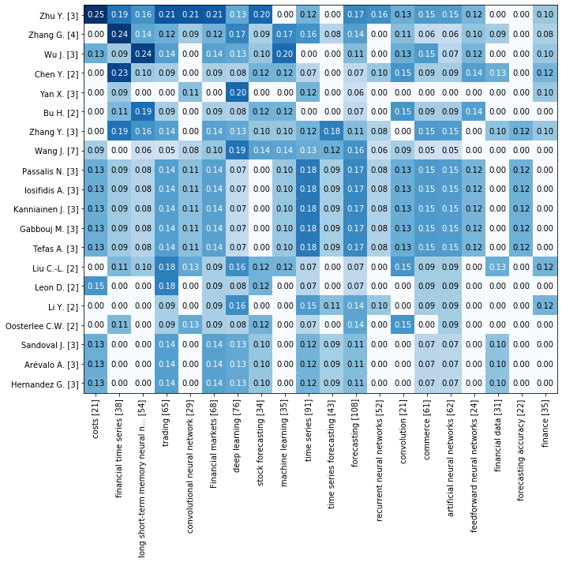
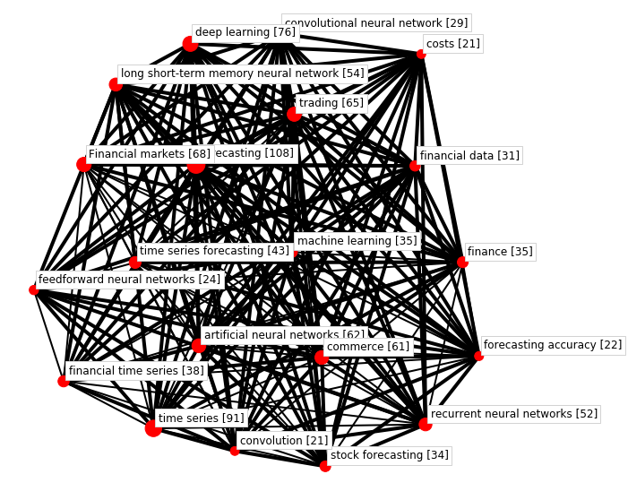

Crosscorrelation matrix (Experimental)¶
[1]:
import matplotlib.pyplot as plt
import pandas as pd
df = pd.read_json("data-05.json", orient="records", lines=True)
[2]:
from techminer import DataFrame, Plot
df = DataFrame(df)
Authors vs Source keywords¶
[2]:
rdf.cross_corr(
column_r="keywords (cleaned)", sep_r=";", column_c="Authors", sep_c=",", top_n=20
).head(30)
[2]:
| keywords (cleaned) | Authors | Crosscorrelation | ID | |
|---|---|---|---|---|
| 0 | costs [21] | Zhu Y. [3] | 0.251976 | [[*88*], [*89*]] |
| 1 | financial time series [38] | Zhang G. [4] | 0.243332 | [[*78*], [*117*], [*119*]] |
| 2 | long short-term memory neural network [54] | Wu J. [3] | 0.235702 | [[*34*], [*66*], [*115*]] |
| 3 | financial time series [38] | Chen Y. [2] | 0.229416 | [[*46*], [*66*]] |
| 4 | trading [65] | Zhu Y. [3] | 0.214834 | [[*78*], [*88*], [*89*]] |
| 5 | convolutional neural network [29] | Zhu Y. [3] | 0.214423 | [[*78*], [*89*]] |
| 6 | Financial markets [68] | Zhu Y. [3] | 0.210042 | [[*78*], [*88*], [*89*]] |
| 7 | deep learning [76] | Yan X. [3] | 0.198680 | [[*13*], [*44*], [*85*]] |
| 8 | stock forecasting [34] | Zhu Y. [3] | 0.198030 | [[*78*], [*89*]] |
| 9 | machine learning [35] | Wu J. [3] | 0.195180 | [[*34*], [*66*]] |
| 10 | long short-term memory neural network [54] | Bu H. [2] | 0.192450 | [[*66*], [*115*]] |
| 11 | financial time series [38] | Zhu Y. [3] | 0.187317 | [[*78*], [*88*]] |
| 12 | financial time series [38] | Zhang Y. [3] | 0.187317 | [[*6*], [*109*]] |
| 13 | deep learning [76] | Wang J. [7] | 0.187317 | [[*3*], [*15*], [*87*], [*128*]] |
| 14 | time series [91] | Passalis N. [3] | 0.181568 | [[*8*], [*110*], [*114*]] |
| 15 | time series [91] | Iosifidis A. [3] | 0.181568 | [[*8*], [*110*], [*114*]] |
| 16 | time series [91] | Kanniainen J. [3] | 0.181568 | [[*8*], [*110*], [*114*]] |
| 17 | time series [91] | Gabbouj M. [3] | 0.181568 | [[*8*], [*110*], [*114*]] |
| 18 | time series [91] | Tefas A. [3] | 0.181568 | [[*8*], [*110*], [*114*]] |
| 19 | time series forecasting [43] | Zhang Y. [3] | 0.176090 | [[*4*], [*6*]] |
| 20 | trading [65] | Liu C.-L. [2] | 0.175412 | [[*19*], [*42*]] |
| 21 | trading [65] | Leon D. [2] | 0.175412 | [[*52*], [*94*]] |
| 22 | deep learning [76] | Zhang G. [4] | 0.172062 | [[*27*], [*78*], [*117*]] |
| 23 | machine learning [35] | Zhang G. [4] | 0.169031 | [[*27*], [*117*]] |
| 24 | forecasting [108] | Gabbouj M. [3] | 0.166667 | [[*8*], [*110*], [*114*]] |
| 25 | forecasting [108] | Zhu Y. [3] | 0.166667 | [[*78*], [*88*], [*89*]] |
| 26 | forecasting [108] | Kanniainen J. [3] | 0.166667 | [[*8*], [*110*], [*114*]] |
| 27 | forecasting [108] | Passalis N. [3] | 0.166667 | [[*8*], [*110*], [*114*]] |
| 28 | forecasting [108] | Iosifidis A. [3] | 0.166667 | [[*8*], [*110*], [*114*]] |
| 29 | forecasting [108] | Tefas A. [3] | 0.166667 | [[*8*], [*110*], [*114*]] |
[3]:
rdf.documents_by_terms("Authors", sep=",", top_n=20)
[3]:
| Authors | Num Documents | ID | |
|---|---|---|---|
| 0 | Wang J. | 7 | [[*3*], [*10*], [*15*], [*80*], [*87*], [*128*... |
| 1 | Zhang G. | 4 | [[*27*], [*78*], [*117*], [*119*]] |
| 2 | Yan X. | 3 | [[*13*], [*44*], [*85*]] |
| 3 | Hernandez G. | 3 | [[*52*], [*94*], [*100*]] |
| 4 | Tefas A. | 3 | [[*8*], [*110*], [*114*]] |
| 5 | Sandoval J. | 3 | [[*52*], [*94*], [*100*]] |
| 6 | Iosifidis A. | 3 | [[*8*], [*110*], [*114*]] |
| 7 | Zhang Y. | 3 | [[*4*], [*6*], [*109*]] |
| 8 | Arévalo A. | 3 | [[*52*], [*94*], [*100*]] |
| 9 | Wu J. | 3 | [[*34*], [*66*], [*115*]] |
| 10 | Passalis N. | 3 | [[*8*], [*110*], [*114*]] |
| 11 | Kanniainen J. | 3 | [[*8*], [*110*], [*114*]] |
| 12 | Zhu Y. | 3 | [[*78*], [*88*], [*89*]] |
| 13 | Gabbouj M. | 3 | [[*8*], [*110*], [*114*]] |
| 14 | Li Y. | 2 | [[*40*], [*97*]] |
| 15 | Liu C.-L. | 2 | [[*19*], [*42*]] |
| 16 | Leon D. | 2 | [[*52*], [*94*]] |
| 17 | Bu H. | 2 | [[*66*], [*115*]] |
| 18 | Oosterlee C.W. | 2 | [[*18*], [*120*]] |
| 19 | Chen Y. | 2 | [[*46*], [*66*]] |
[4]:
rdf.cross_corr(
column_r="keywords (cleaned)", sep_r=";", column_c="Authors", sep_c=",", top_n=20
).heatmap()

[5]:
rdf.cross_corr(
column_r="keywords (cleaned)", sep_r=";", column_c="Authors", sep_c=",", top_n=20
).map()
/usr/local/lib/python3.6/dist-packages/networkx/drawing/nx_pylab.py:579: MatplotlibDeprecationWarning:
The iterable function was deprecated in Matplotlib 3.1 and will be removed in 3.3. Use np.iterable instead.
if not cb.iterable(width):
